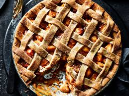

Recipes
Apple Pie

A beautiful apple pie
An apple pie is a fruit pie in which the principal fillng ingredient is apples.
Apple pie is often served with whipped cream, ice cream ("apple pie à la mode"), custard or cheddar cheese.
Ingredients
- 2 (9") pie crusts;
- 7 large Granny Smith apples (peeled, cored and sliced into 1/2 inch slices);
- 1/2 cup granulated sugar;
- 1/2 cup light brown sugar;
- 2 tablespoons all-purpose flour;
- 1 teaspoon ground cinnamon;
- 1/8 teaspoon ground nutmeg;
- 1 tablespoon lemon juice (plus the zest of half of a lemon);
- 1 large egg (lightly beaten in a small bowl for egg wash);
- 2 tablespoons sanding sugar (optional).
Steps
- Start by preparing a flaky pie crust recipe which makes 2 (9") pie crusts, one for the bottom and one for the top of the pie. The pie dough will need to chill for at least 1 hour before rolling out.Or use a store-bought pie crust and follow package directions.
- Place oven rack in the center position and preheat the oven to 400°F(204°C).
- In a large bowl, combine the sliced apples, granulated sugar, light brown sugar, flour, cinnamon, nutmeg and lemon juice and lemon zest, toss to coat evenly.
- Remove the pie crust dough from the fridge and let rest at room temperature for 5-10 minutes. On a lightly floured surface, roll one disc into a 12" circle that is 1/8" thick. Carefully lay the crust into the bottom of a deep dish pie plate.
- Spoon the apple filling over the bottom crust and discard juices at the bottom of the bowl. Roll out the second disc of pie crust until it is 1/8" thick and lay it over the apple filling.
- Use a sharp knife to trim the dough along the outside edge of the pie plate. Lift the edges where the two pie crust meet, gently press to seal and fold them under. Rotate the pie plate and repeat this process util edges are neatly tucked under themselves. Cut 4 slits in the top of the dough to allow steam to vent. Place the pie on a baking sheet.
- Brush the surface of the pie crust with the egg wash and sprinkle with sanding sugar. Cover the edges with a pie shield or a strip of foil to keep them from over browning during the first 25 minutes.
- Bake at 400°F(204°C) for 25 minutes. Carefully remove the pie shield, turn the oven down to 375°F and continue to bake for an additional 30-35 minutes or untl the top is golden brown and the juices are bubbly. Cool at room temperature for at least 3 hours.